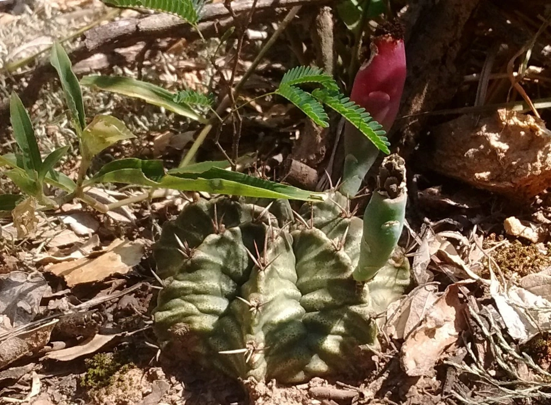

多肉植物 · 植物界
绯牡丹 Gymnocalycium mihanovichii

仙人掌科裸萼球属小型球状多肉，红色或黄色的绯牡丹变种无叶绿素、必须嫁接，是常见的彩色仙人球，原产南美。
- 分类
- 门被子植物门纲木兰纲目石竹目科仙人掌科属裸萼球属
- 栖息环境
- 南美巴拉圭、阿根廷的干旱灌丛与石质坡地，喜光、耐旱
- 地理分布
- 原产南美洲，现世界各地广泛盆栽，中国各地花市常见
- 保护级别
- 暂无评估；CITES 附录Ⅱ（仙人掌科）
物种志
绯牡丹为仙人掌科裸萼球属小型球状多肉植物，球体直径 3–5 厘米，具 8–12 条棱，棱上有刺座。常见的绯牡丹是红、黄、粉色的变种，球体因缺乏叶绿素而呈鲜艳色彩；花顶生，粉色或白色，花期夏季；果实为蒴果。
绯牡丹原产南美洲巴拉圭、阿根廷一带的干旱地区，喜温暖、阳光充足和通风良好的环境，耐旱怕积水。由于彩色变种完全缺乏叶绿素，无法自行进行光合作用，必须嫁接在量天尺等绿色仙人掌上才能存活，砧木提供养分，接穗则长成鲜艳的球体。栽培时放在明亮散射光处，避免暴晒和积水；繁殖以嫁接为主，也可用绿色原种播种，绿色原种可自根生长。
形态与习性
- 株高球体直径 3–5 厘米，具 8–12 条棱
- 花期夏季，花粉色或白色
- 果期花后结蒴果
- 光照喜明亮散射光，忌强光暴晒
- 水分耐旱，见干见湿，忌积水
- 土壤颗粒为主、排水良好的矿质土
- 繁殖以嫁接为主，也可播种
- 主要用途彩色球盆栽、案头观赏
趣味知识
- 彩色绯牡丹缺乏叶绿素，无法自行光合作用，必须嫁接在量天尺上。
- 砧木提供养分，接穗长成红、黄、粉等鲜艳颜色的球体。
- 绯牡丹原产南美，是裸萼球属中的观赏变种，花为粉色或白色。
- 嫁接苗怕积水，浇水时应避免淋到接口处，以免腐烂。